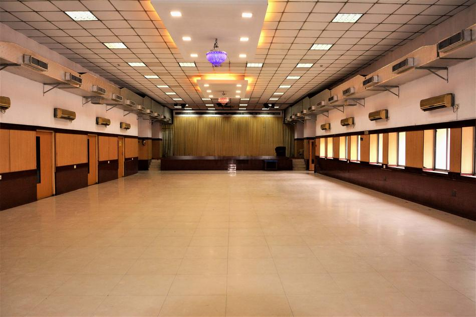

<html>

<head>
    <title>Blog</title>
</head>

</html>

<body>
    <div class="navbar-header">
        <button type="button" class="navbar-toggle" data-toggle="collapse" data-target="#myNavbar">
            <span class="icon-bar"></span>
            <span class="icon-bar"></span>
            <span class="icon-bar"></span>
        </button>
        <a class="navbar-brand" href="Modern High school for girls"></a>
    </div>
    <div class="collapse navbar-collapse" id="myNavbar">
        <ul class="nav navbar-nav">
            <li><a href="#campus_life">CAMPUS LIFE</a></li>
            <li><a href="#achievments">ACHIEVMENTS</a></li>
            <li><a href="#new">WHAT'S NEW?</a></li>
            <li><a href="#alumni">ALUMNI</a></li>
            <li><a href="#contactUs">CONTACT US</a></li>
        </ul>
        <a class="navbar-brand" href="#mordernHighSchool">Modern High School For Girls</a>
    </div>
    <div class="conatainer">
        <div class="page-header" id="travel">
            <h2 class="text-capitalize">MHS</h2>
        </div>
        <center>
            <div> 

            </div>


            <center>
                <div class="travel_mainDiv"> 
                    <h4 class="text-capitalize"><kbd>our school garden</kbd></h4>
                    <hr>
                    <h5 class="text-success text-left text-capitalize">The school garden</h5>
                    <p class="text-muted text-left"> The school garden was build in 1950 </p>

                </div>
            </center>
            <center>
                <div class="travel_mainDiv"> 
                    <h4 class="text-capitalize"><kbd>our school's computer lab</kbd></h4>
                    <hr>
                    <h5 class="text-success text-left text-capitalize">The school's computer lab</h5>
                    <p class="text-muted text-left"> The school's computer lab was build in 1992 </p>

                </div>
            </center>
            <center>
                <div class="travel_mainDiv"> 
                    <h4 class="text-capitalize"><kbd>our school shed</kbd></h4>
                    <hr>
                    <h5 class="text-success text-left text-capitalize">The school shed</h5>
                    <p class="text-muted text-left"> The school shed was build in 1952 </p>

                </div>
            </center>

            <body>
                
                <div class="container">
                  
                    <div class="page-header col-lg-12 col-md-12 col-sm-12 col-xs-12" id="new">
                        <h2 class="text-capitalize ">What's New</h2>
                    </div>

                    <ul class="list-group">

                        <li class="list-group-item  col-lg-12 col-md-12 col-sm-12 col-xs-12 environment_li">
                            <h4>New School Canteen</h4>
                            

                            <p class="list-group-item-text">The food options and responsibilities to consider, canteens must be better organised and more efficient than they have been in the past. Online menus with photographs of the meals prepared, and detailed descriptions of their ingredients help both students and parents make the right nutritional choices. Each student or staff member who accesses the canteen could be provided with a School Canteen Account on the school website that keeps track of their previous meal choices and any dietary requirements they may have. Ordering online by ticking a box and paying for meals online can eliminate all the fuss of money handling, making it safer and less complicated for staff and students alike. Here again, diversity is the key.</p>
                        </li>

                        <li class="list-group-item  col-lg-12 col-md-12 col-sm-12 col-xs-12 environment_li">
                            <h4>Implemented Online Attendance Management System</h4>
                            
                            
                            <p class="list-group-item-text col-lg-7 col-md-7 col-sm-7 col-xs-12"><b>1. Accuracy</b>
                                Humans are prone to error, even if we provide them with supporting computational devices. Automated attendance management systems ensure accurate time records and minimize the inevitable and costly errors with manual data entry. This accurate data thereby helps to provide accurate performance and payroll data.
                                <br>
                                <b>2. Economics</b>
                                Have you ever thought that attendance management systems could control costs? It saves money by putting an end to inaccurate time reporting, buddy punching, absenteeism, tardiness, time abuse, and overpayment. As a matter of fact, a study done by the Axsium Group found that large organizations save up to $1,600 per employee after implementing automated attendance management systems.
                                <br>
                                <b> 3. Productivity / Efficiency</b>
                                Monitoring and managing attendance manually can be a time-consuming, laborious, and expensive affair. It takes time to process paper sheets and time cards, create schedules, authorize leave and overtime, and create payroll manually. Free up precious administration time with an automated system that does it all for you, from keeping track of employee hours to automatically importing information into your payroll system. The time and effort saved combined with data accuracy helps in optimizing the use of resources which lead to increased productivity and improves profits. And many more like Visibility / Insights, Hassle Free Workflow Management, Flexibility, Integration / Configuration, Real-time tracking, Security, and Compliance
                            </p>
                        </li>
                    </ul>
                </div>
                <div id="footer"></div>
                <div class="container">

                   

                <iframe src="https://www.google.com/maps/embed?pb=!1m18!1m12!1m3!1d230.3229525625634!2d88.36415930862704!3d22.535407077910783!2m3!1f0!2f0!3f0!3m2!1i1024!2i768!4f13.1!3m3!1m2!1s0x3a0276df38ffd3a9%3A0x1cb3b01f0fbb090f!2sModern%20High%20School%20for%20Girls!5e0!3m2!1sen!2sin!4v1631704088130!5m2!1sen!2sin" width="600" height="450" style="border:0;" allowfullscreen="" loading="lazy"></iframe>


            </body>
